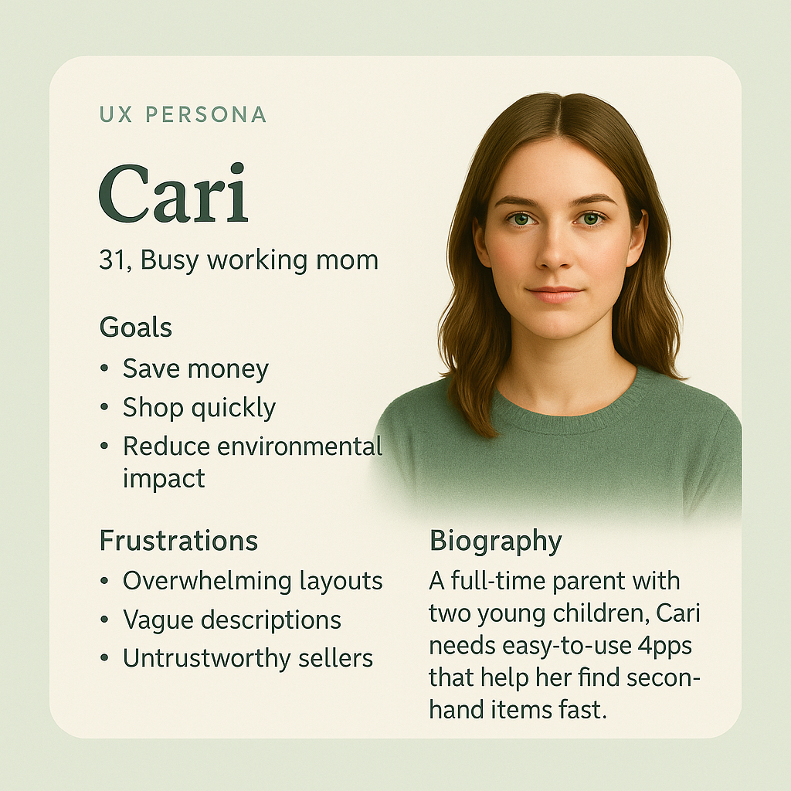
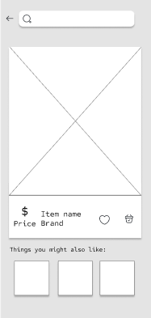
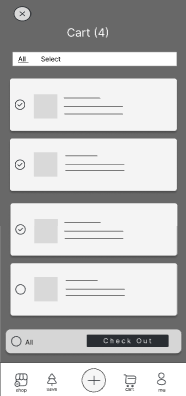

A sustainability-driven resale platform that makes secondhand kids' shopping fast, trustworthy, and emotionally rewarding for families.
Explore the prototypes and design files
As a first-time aunt watching my sisters navigate constant growth spurts and tight budgets, I saw the real financial pressure of buying new children's clothing. My own experience reselling on Depop revealed a gap: no platform truly supports the needs of parents.
How might we create a secondhand shopping experience for kids that feels fast, trustworthy, and emotionally rewarding?
I evaluated ThredUp, Mercari, Poshmark, and Facebook Marketplace and conducted five in-person interviews with parents, caregivers, and grandparents. Participants completed real shopping tasks — filtering, evaluating product details, checking out — while I observed and noted friction points.
would leave if they couldn't find items quickly
wanted clearer seller trust signals
competitors built specifically for kids' resale
competitors had eco-impact or reward systems
→ Design must prioritize speed, trust signals, and clear item condition labels

I began with rough composition sketches to establish layout logic and flows, then moved into low-fidelity wireframes exploring homepage hierarchy, product card structure, browsing flows, and listing flows.


I also created frustration and delight storyboards centered around Clarke, a secondary caregiver persona — mapping the gap between current resale pain points and the streamlined experience Grow Up Green could deliver.
I ran a moderated study with five participants testing four flows: browsing, filtering, product detail clarity, and checkout.
5/5 completed checkout easily. Only minor polish needed — the core flow held up without redesign.
4/5 said the experience felt intuitive. The visual hierarchy and card-based layout worked.
2/5 struggled with navigation clarity. Fixed by replacing vague icons with labeled ones and repositioning the search bar.
1/5 wanted better grouping. Fixed by reorganizing filters and adding more spacing between content blocks.
High-fidelity designs used a forest-green and spring-green palette to reinforce sustainability. Mobile emphasized bold, swipe-driven interactions. Desktop used a calm grid-based layout for focused browsing.
Watching my sisters shop gave me insight no survey could. The best research starts before you open a spreadsheet.
Every participant cited trust as a barrier. Building it in — not bolting it on — changed the whole information architecture.
For busy parents, a slow or cluttered interface isn't just annoying — it's a dealbreaker. Efficiency is a form of respect.
The eco-impact feature wasn't just a feature — it reframed buying used as something to feel good about, not settle for.
Participants kept asking when it would launch. That's the kind of validation no rubric can give you.